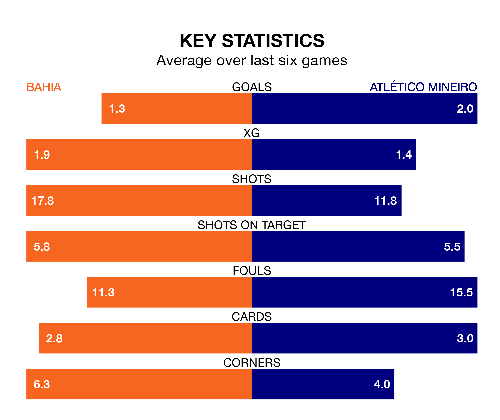

Relegation candidates Bahia face a challenge against high-flying Atlético Mineiro at Arena Fonte Nova on Thursday.
Bahia are 17th in the Serie A table, and have picked up 11 wins and eight draws in their 37 games to date.
Atlético Mineiro, meanwhile, are second in the standings with 66 points, having won 19 and drawn nine, and are three points behind table-toppers Palmeiras.
In Paulinho, Atlético Mineiro have the league's most on-form striker so far this season. He has notched 19 goals in 35 appearances.
His goal rate of one every 154 minutes is quicker than that of Everaldo Stum, Bahia's top scorer with a goal every 234 minutes, and a total of nine goals in 32 games.
With 51 goals in 37 games so far this season, the away team are scoring more than average in the league with 1.4 goals per game. And they are conceding fewer than average, letting in 28 goals at a rate of 0.8 per game.
The hosts, meanwhile, are average scorers, with 1.2 goals per game. They have conceded 1.4 goals per game.
In the last 10 years, Bahia and Atlético Mineiro have played each other on 15 occasions. Bahia won four of them, Atlético Mineiro five, and they drew six times.
On average, Bahia scored 1.2 goals and Atlético Mineiro 1.3 in those matches.
Their last meeting was on August 13, when Atlético Mineiro won 1-0 at home.
Bahia are in bad form in Serie A, with one win and a draw from their last six games.
With four wins and two draws over that period, Atlético Mineiro's form is much better – they have taken 14 points from 18, compared to Bahia's four.
Bahia's last match was on Sunday, a 3-2 loss against América Mineiro, with Ademir da Silva Santos Junior and Stum getting the goals for Bahia.
Atlético Mineiro beat São Paulo 2-1 last time out, also on Sunday, with Hulk and Sampaio Filho on the scoresheet.
